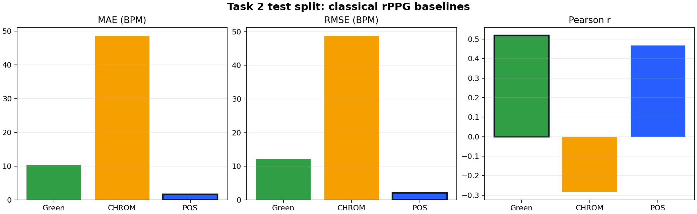
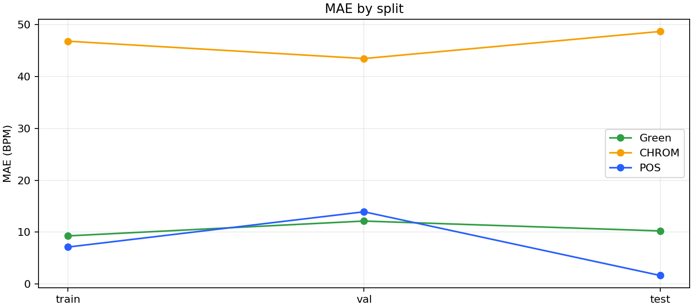

AIrPPG / Task 2
Signal Extraction & Classical Baselines
Báo cáo này đánh giá Green channel, CHROM và POS sau bước trích xuất tín hiệu RGB từ 3 ROI. Mỗi method dùng tín hiệu đã combine ROI bằng average, nên đây là baseline truyền thống ở mức method, không phải single-ROI.
Methods: Green / CHROM / POS
Rows: 147
Test windows: 206
Metrics: MAE / RMSE / Pearson / SNR
Metric đọc như thế nào?
MAE ↓
Sai số tuyệt đối trung bình giữa HR dự đoán và ground truth. Ví dụ MAE 1.66 BPM nghĩa là trung bình lệch khoảng 1.66 nhịp/phút. Đây là metric chính vì dễ diễn giải.
Sai số tuyệt đối trung bình giữa HR dự đoán và ground truth. Ví dụ MAE 1.66 BPM nghĩa là trung bình lệch khoảng 1.66 nhịp/phút. Đây là metric chính vì dễ diễn giải.
RMSE ↓
Giống MAE nhưng phạt lỗi lớn nặng hơn. Nếu RMSE cao hơn MAE nhiều, method có vài window sai rất lớn.
Giống MAE nhưng phạt lỗi lớn nặng hơn. Nếu RMSE cao hơn MAE nhiều, method có vài window sai rất lớn.
Pearson r ↑
Đo xu hướng dự đoán có tăng/giảm cùng ground truth không. Gần 1 là theo trend tốt, gần 0 là gần như không theo, âm là ngược trend.
Đo xu hướng dự đoán có tăng/giảm cùng ground truth không. Gần 1 là theo trend tốt, gần 0 là gần như không theo, âm là ngược trend.
SNR ↑
Độ mạnh của peak nhịp tim trong phổ so với nhiễu. SNR cao hơn thường tốt hơn, nhưng SNR cao không đảm bảo HR đúng nếu peak nằm sai tần số.
Độ mạnh của peak nhịp tim trong phổ so với nhiễu. SNR cao hơn thường tốt hơn, nhưng SNR cao không đảm bảo HR đúng nếu peak nằm sai tần số.
Kết luận nhanh
Best test MAE
POS
MAE 1.66 BPM, RMSE 2.12 BPM. Đây là baseline mạnh nhất ở test split.
Green
Khá
Test MAE 10.24 BPM. Có ích nhưng kém POS rõ rệt, đặc biệt khi ánh sáng/motion làm kênh xanh nhiễu.
CHROM
Yếu
Test MAE 48.66 BPM, Pearson âm. Với protocol hiện tại CHROM không phải baseline đáng tin.
Test split

MAE theo split

Bảng tổng hợp
Train
| Method | MAE ↓ | RMSE ↓ | Pearson ↑ | SNR | Samples | Windows |
|---|---|---|---|---|---|---|
| Green | 9.29 | 12.49 | 0.304 | -2.68 | 39 | 1468 |
| CHROM | 46.79 | 47.76 | -0.003 | -11.84 | 39 | 1468 |
| POS | 7.14 | 9.50 | 0.391 | 0.36 | 39 | 1468 |
Val
| Method | MAE ↓ | RMSE ↓ | Pearson ↑ | SNR | Samples | Windows |
|---|---|---|---|---|---|---|
| Green | 12.15 | 17.64 | 0.501 | -6.74 | 4 | 186 |
| CHROM | 43.44 | 44.33 | 0.066 | -12.92 | 4 | 186 |
| POS | 13.93 | 20.42 | 0.291 | -5.80 | 4 | 186 |
Test
| Method | MAE ↓ | RMSE ↓ | Pearson ↑ | SNR | Samples | Windows |
|---|---|---|---|---|---|---|
| Green | 10.24 | 12.09 | 0.519 | -2.48 | 6 | 206 |
| CHROM | 48.66 | 48.81 | -0.284 | -12.49 | 6 | 206 |
| POS | 1.66 | 2.12 | 0.467 | 2.06 | 6 | 206 |
Ô xanh là MAE tốt nhất trong split. Test split mới là phần chính để nhận xét generalization trong batch hiện tại.
Phương pháp và nguyên nhân khả dĩ
Green channel
Dựa vào kênh G vì hấp thụ máu thường rõ ở vùng xanh lá. Nhanh và đơn giản, nhưng dễ nhiễu bởi ánh sáng và motion.
Dựa vào kênh G vì hấp thụ máu thường rõ ở vùng xanh lá. Nhanh và đơn giản, nhưng dễ nhiễu bởi ánh sáng và motion.
CHROM
Dùng chrominance projection để khử nhiễu màu da. Kết quả hiện tại rất kém, nên cần xem lại sensitivity với preprocessing/window hoặc dataset split trước khi dùng làm kết luận mạnh.
Dùng chrominance projection để khử nhiễu màu da. Kết quả hiện tại rất kém, nên cần xem lại sensitivity với preprocessing/window hoặc dataset split trước khi dùng làm kết luận mạnh.
POS
Chiếu tín hiệu lên mặt phẳng trực giao với skin tone. Kết quả test tốt nhất cho thấy POS đang là classical baseline đáng tin nhất trong repo hiện tại.
Chiếu tín hiệu lên mặt phẳng trực giao với skin tone. Kết quả test tốt nhất cho thấy POS đang là classical baseline đáng tin nhất trong repo hiện tại.
Đối chiếu proposal/docx
Green, CHROM và POS là baseline truyền thống đã chạy. DeepPhys, PhysNet, TS-CAN và EfficientPhys mới là baseline tham chiếu trong docx, chưa có artifact hiện tại, nên chưa được đưa vào bảng metric. Khi các task sau chạy model học sâu, report phải bổ sung cùng bảng so sánh MAE/RMSE/Pearson/SNR và ghi rõ protocol.
Kết luận cuối
Task 2 đạt vai trò baseline. POS là baseline tốt nhất trên test split; Green dùng được nhưng kém ổn định hơn; CHROM hiện không phù hợp với cấu hình pipeline này. Các kết quả này là mốc so sánh cho Task 3 fusion và các task model nhẹ sau này.